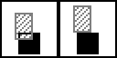
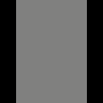
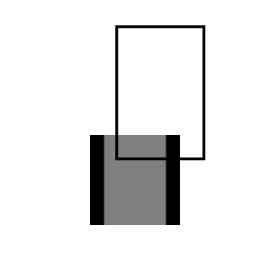
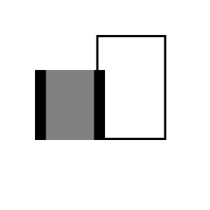
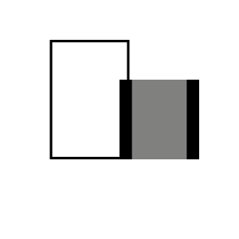

アクションゲームのブロックの当たり判定
Tweet注意！この私の部誌は日本語がおかしいところが多々ありますのでご注意ください。
ゲームはフレームごとに処理されている
この部誌を読んでいるみなさん、こんにちは！突然ですが皆さんは「ゲームはフレームごとに処理されている」ということを知っていますが?
「フレームってなんぞや?」と思うかもしれませんが、実はビデオゲームというのはパラパラ漫画のように素早く画面が切り替わって、1画面ずつゲームの処理が行われているのです。この一画面をフレームと言い、一秒間にフレームがいくつ切り替わるかの値をFPSという単位で表します。ディスプレイの性能の関係で、大抵のゲームは60FPSか30FPSで動作するように設計しますが、処理が追いつかなくなるとまれに遅れることもあります。
それではこの1フレームの間に度の湯なことが起こっているかの具体例をあげましょう。例えば某マ○オの移動です。実際は素早くフレームが切り替わっているのでなめらかに移動しているように見えますが、実は一枚一枚はただの静止画なのです!
どういうことかを理解知るために、まずは右の図を見てください。例えば、一枚目のフレームでプレイヤーがAの一に、二枚目のフレームでプレイヤーがBのいちに居た場合には、画面の前ではプレイヤーが左から右へなめらかに移動しているように見えるのです。
 図1
図1
プレイヤーとブロックの当たり判定
ここからが本題です。この章では「プレイヤーとブロックの当たり判定」について説明します。そもそも、当たり判定とはなにかわかりますか?簡単に言えば、ゲームの中にある何かと、また何かとが当たっている(触れている)華道家の判定です。
この技術を使えば、例えばアイテムとプレイヤーが当たっているかを判定して、当たっていた場合にアイテムが消えてプレイヤーが回復したりなどの動作を実装することができます。
これはただ触れているかどうかだけを調べればいいので簡単です。ですがマ○オとブロックの当たり判定となるとそう簡単にはいきません。なぜかというと、「マ○オがブロックに対してどちらの方向から当たったのか」まで調べなくてはならないからです。
どうしてこのようなことを調べなくてはいけないのでしょうか。それはブロックに当たったときにその当たってきた方向に戻さなくてはならないからです。ここで戻さなければ、マ○オはプレイヤーがその方向の操作をやめるまでずっとブロックにめり込み続けてしまいます。
例えば、図2のように上から当たってきたのなら上に戻し、また左からなら図3のように左に戻します。
 図2
図3
ということで、「どの方向からブロックに当たったのか」を調べなければいけないのですが、これが難しいのです。この調べ方は色々ありますが、私は次のような方法で調べています。
図4を見てください。
 図4
この図を1ブロックだと思ってください。まずこのようにブロックを分けて考えます。(ブロックの見た目を変えるわけではありません。図の中でわかりやすいように変更しているだけです。)まずブロック全体ではなく灰色の部分だけに重点を置いてあたりを調べます。そして触れていた場合には、プレイヤーが上へ移動している途中なら図5のように下に戻し、
 図5
図6のように下に移動しているか、または当たっているのに動きは止まっているという場合には下へ戻します。
 図6
図6
内側の灰色には触れておらず、右側の黒色に触れているなら図7のように右へ戻し、左なら図8のように左へ戻します。
 図7  図8
と、言う仕組みです。
皆さん、ここまでお読みいただきありがとうございます。よければ僕の作った「真顔のアクションver2.0」*を遊んでみてください。このゲームもこの当たり判定が使われていますよ!
それではまた!

編集部注:文化祭のみでの展示です。